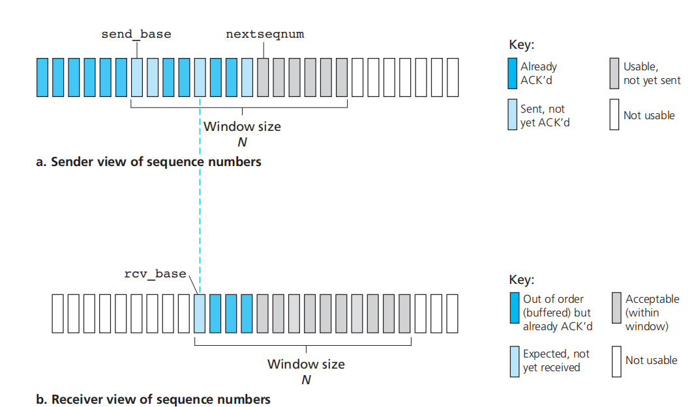
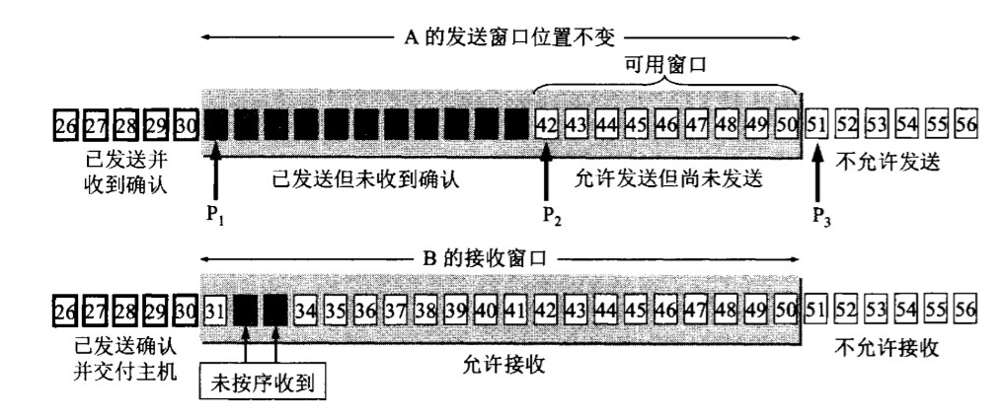
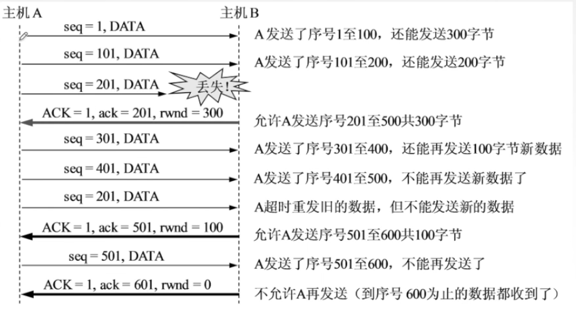

拥塞控制和流量控制
拥塞(Congestion): 网络中存在太多的数据包导致数据包被延迟和丢失，降低了传输性能，这种情况称为拥塞。
网络层和传输层共同承担处理拥塞的责任。控制拥塞的最有效方法是减少传输层注入网络的负载。拥塞产生最严重的后果是死锁。
值得指出的是拥塞控制和流量控制之间有很大的差异，它们之间的关系非常微妙。拥塞控制的任务是确保网络能够承载所有到达的流量。这是一个全局性的问题，涉及各方面的行为，包括所有的主机和所有的路由器。与此相反，流量控制只与特定的发送方和特定的接收方之间的点到点流量有关。它的任务是确保一个快速的发送方不会持续地以超过接收方接收能力的速率传输数据。
网络层拥塞控制
拥塞的出现意味着负载（暂时）大于资源（在网络的一部分〉可以处理的能力。很自然人们能想到两个解决方案：增加资源或减少负载。
- 给路由器、链路升级，增加带宽。
- 流量感知的路由，根据每天的流量模式定制路由。
- 准入控制。在虚电路网络中，可以选择拒绝新连接的建立减少负载。
- 流量调节。路由器监控使用的资源，确定合适快要接近拥塞，然后将反馈消息传递给造成拥塞的发送方。
- 负载脱离。当以上任何 种方法都无法消除拥塞时，路由器可以亮出它的杀手铜，即负载脱落，把某些数据包丢弃。对于要丢弃哪些数据包，有不同的策略。
TCP拥塞控制
UDP是没有拥塞控制的。我们来看看TCP拥塞控制的方法。TCP会不断的探索拥塞窗口cwnd。整个过程被概括为“慢启动、拥塞避免、快速回复”（下面的第三张图 ）
以一个较小的值开始，1个MSS。当被确认（收到ACK）的时候
- 如果还没有达到
ssthresh的阈值，cwnd翻倍。 - 如果达到了
ssthresh的阈值，那么cwnd++。
当我们收到三个重复的确认的时候，说明已经开始丢包了。可能是拥塞导致的，这个时候我们进行快速恢复（下面的第二张图）：
cwnd/=2，ssthresh也被设置为这个值。
如果我们发现发送包超时了，这时我们进行慢启动（下面的第一张图）：
ssthresh设置成cwnd/2，cwnd=1。
之后继续按照上面的规则增加cwnd，重复上面的过程。
流量控制协议
流量控制要处理的问题是：发送的速度太快而接受的速度太慢。
- 发送窗口：发送方维持一组连续的允许发送的帧的序号。
- 接收窗口：接收方维持一组连续的允许接收的帧的序号。
事实上，通过确认、超时重传、编号、校验，实现了可靠传输。
Stop and Wait

可能出现的意外情况。
- 第一种，如果Sender发送的包丢失了。Sender在很久之后没有收到ACK会选择重发。
- 第二种，如果Receiver发送的ACK丢失了。Sender在很久之后没有收到ACK会选择重发。那Receiver就很迷惑了，这个包是哪个？是新的包，还是旧的包？所以我们需要给包编号，对于Stop and Wait，1 bit的就够了（这也是下面GBN公式N=1的情况）。
你也可以认为stop and wait就是两个窗口大小都是1的GBN。
Go back N

在GBN协议中，允许发送方发送多个分组而不需要等待确认。但是在流水线中未确认的分组数不能超过某个最大的允许数$N$（即发送窗口大小$W_t$）。我们将base定义成 最早未确认的分组的序号。将nextseqnum定义成最小的未使用序号。
采用累积确认的方式，ACK(N)表示接收方已经收到N号帧和它之前的全部帧。所以，如果Receiver收到了1345但是没收到2，只会发送ACK(1)并丢弃345；如果Sender只收到了ACK(1),ACK(3),ACK(5)，Sender知道其实12345都已经被接收成功了，下一个发送6。
如果出现超时，发送方重传所以已发送但未被确认的帧。类似的，超时可能是发送的数据丢失或者ACK丢失。
采用N个比特对frame进行编号，那么发送窗口的尺寸满足$1\le W_t \le2^n-1$。否则就无法区别旧帧和新帧。接收窗口大小为1。
Selective repeat protocol

GBN和SR都属于连续ARQ协议。
GBN: 如果收到了1345但是没收到2，只会发送ACK(1)并丢弃345。
GBN直接丢弃了失序的包，也是一种浪费。我们想只重传出错的帧。究其原因，是因为接收方窗口大小为1，对于不按序到达的包没有地方缓存。所以Selective repeat protocol接收方窗口大于1 。
也是采用累积确认的方式，ACK(N)表示接收方已经收到N号帧和它之前的全部帧。只不过以上面的例子，我在收到2之后就直接发送ACK(5)了，因为我已经把34缓存了。
发送窗口和接受窗口的尺寸要满足$W_T \le 2^{n-1}$，否则也是无法区分新包和旧包。一般情况我们认为发送窗口和接受窗口是一样大的。
具体解释，是
- $发送窗口+接受窗口 \leq 2^n$
- $发送窗口 \geq 接受窗口$
设想这样一个场景，3bit，发送窗口为5，接受窗口为4。
发送方发送0,1,2,3,4，接受者都收到了，返回ACK(4)，移动接受窗口，等待5,6,7,0。结果ACK丢了，发送方重传了0。
所以接收方就把老0当新0了，这就是所谓的分不清旧帧和新帧。
TCP流量控制
TCP采用滑动窗口机制。

在通信的过程中，接收方根据自己接收缓存的大小，动态的调整接收窗口rwnd的大小。发送方的发送窗口取$min(rwnd,cwnd)$，即接收窗口和拥塞窗口的较小者。
- TCP使用累计应答的方式。这一点与连续ARQ类似。
- TCP在接收端会设置缓存，来缓存正确接收但是失序的分组，这点与SR类似。（实际上TCP RFC并没有对接收端要怎样处理失序到达的分组提出要求，但是在接收端设置缓存是实践中大家都采用的方法）
- TCP使用快速重传机制：如果收到对于一个特定报文段的3个冗余ACK，则在超时事件发生前就会对该报文段进行重传，这大大节约了时间。
- 注意：TCP中的ack是指接收端希望从发送端收到的下一字节的序号。这个和之前介绍的略有不同，但是实现的效果是类似的的。例如发送端发送了编号为0-5的字节，这时接收端成功接收后就会发送ack为6。
- 对于最后0窗口的情况，为了避免“死锁”，会计时。如果超时了还没有收到窗口不为0的通知，会发送探测报文段。

链路层流量控制
网络层需要流量控制吗？ 网络层点对点之间的传输，其实还是经过链路层的。所以IP协议里没有流量控制。
那么链路层流量控制有什么办法呢？就是上面的办法。